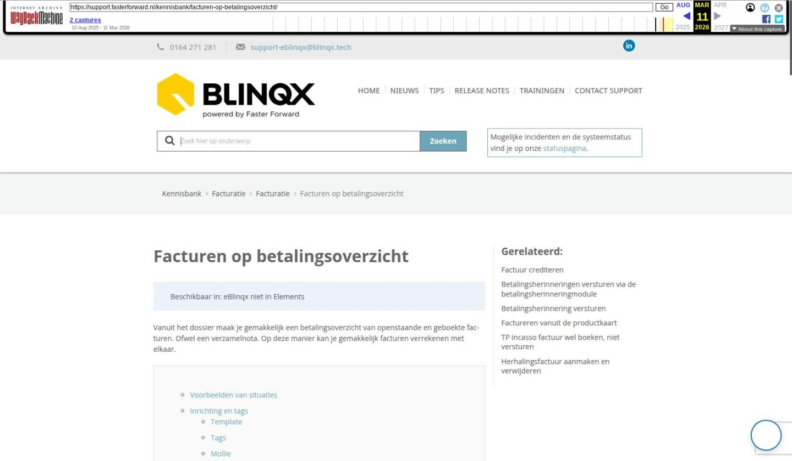

Facturen op betalingsoverzicht

Tekstinhoud
Facturen op betalingsoverzicht
Beschikbaar in: eBlinqx niet in Elements
Vanuit het dossier maak je gemakkelijk een betalingsoverzicht van openstaande en geboekte facturen. Ofwel een verzamelnota. Op deze manier kan je gemakkelijk facturen verrekenen met elkaar.
Voorbeelden van situaties
Inrichting en tags
Template
Tags
Mollie
Betalingsoverzicht aanmaken en versturen
Handmatig
Workflow
Tussenpersoon incasso en betalingsoverzicht
Financiële verwerking betalingsoverzicht
Betalingsoverzicht verwijderen
Betalingsoverzicht exporteren
Voorbeelden van situaties
Voorbeeld 1: de klant heeft een nieuwe auto gekocht. De verzekering van de oude auto wordt stopgezet en voor de nieuwe auto wordt een nieuwe verzekering aangevraagd. Vanuit de verzekering van de oude auto komt er restitutie. Deze restitutie kan dan verrekend worden met een openstaande factuur voor de nieuwe auto. Beide facturen neem je op in het betalingsoverzicht, zodat dit verrekend wordt met elkaar.
Voorbeeld 2: de klant heeft een hypotheekadvies gekregen en hiervan is een factuur gemaakt. Je wilt de klant korting geven op het bedrag van het hypotheekadvies. Hiervoor heb je een creditfactuur aangemaakt. In het betalingsoverzicht neem je de factuur hypotheekadvies en de creditfactuur op. Zo is het duidelijk wat de klant moet betalen voor het hypotheekadvies.
Inrichting en tags
Template
Om een betalingsoverzicht te kunnen maken moet er een template aanwezig zijn die staat ingesteld in de module Standaard template beheer bij ‘Betalingsoverzicht’. Deze is te vinden onder Beheer. Staat dit niet ingesteld dan verschijnt er bij het maken van het betalingsoverzicht de melding ‘Er is geen standaard documenttemplate ingesteld voor betalingsoverzichten’.
In jouw omgeving is een basistemplate betalingsoverzicht aangemaakt en ingesteld in Standaard template beheer. Wil je een maatwerktemplate met hierin bijvoorbeeld jouw logo, stuur dan een e-mail naar support-eblinqx@blinqx.tech.
Tags
Er zijn diverse tags die gebruikt kunnen worden om de template voor het betalingsoverzicht te maken en die de gegevens van het betalingsoverzicht ophalen. De volgende tags zijn beschikbaar:
[betalingsoverzicht->betaallink->id]
[betalingsoverzicht->betaallink->link]
[betalingsoverzicht->betaallink->verloopdatum->]
[betalingsoverzicht->betalingskenmerk]
[betalingsoverzicht->specificatie]
[betalingsoverzicht->specificatie met productinformatie]:
Mollie
Indien je gebruik maakt van Mollie dan zal er voor het betalingsoverzicht een eigen link gegenereerd worden. De klant kan dan het bedrag van het betalingsoverzicht gemakkelijk betalen via deze link. In de module Overzicht betaallinks zijn de aangemaakte links van de betalingsoverzichten terug te vinden. Maak je nog geen gebruik van Mollie, maar wil je dit wel? Lees er hier meer over.
Betalingsoverzicht aanmaken en versturen
Er zijn twee verschillende manieren om een betalingsoverzicht te maken, namelijk handmatig of via de workflow.
Handmatig
Om vanuit het dossier handmatig een betalingsoverzicht te maken doorloop je de volgende stappen:
In het dossier ga je naar het tabblad Financieel. Hier selecteer je de facturen die je op wilt nemen in het betalingsoverzicht. Dit door de checkboxen ervoor aan te vinken. Let op: je kunt alleen openstaande en geboekte facturen opnemen in het betalingsoverzicht.
Vervolgens klik je op ‘Acties’ en dan ‘Betalingsoverzicht aanmaken’
Bij de facturen die nog niet verzonden zijn, komt bij ‘Verzonden’ (het papieren vliegtuigicoon) de datum en tijd te staan van het moment van het genereren van het betalingsoverzicht.
Er wordt een PDF van het betalingsoverzicht aangemaakt die komt te staan onder het tabblad Documenten in het klantdossier. Via de e-mail of per post kan je dit overzicht naar jouw klant versturen.
Workflow
Ook is het mogelijk om via de workflow een betalingsoverzicht te maken. Deze stap moet dan wel aan een workflow toegevoegd worden. Hierin zijn verschillende opties mogelijk, namelijk:
Periode
Altijd: alle openstaande, geboekte en niet eerder verzonden facturen opnemen in het betalingsoverzicht
Afgelopen maand: de openstaande, geboekte en niet eerder verzonden facturen van de afgelopen periode (vandaag – 1 maand) opnemen in het betalingsoverzicht
Factuur betaalwijze
Overschrijving en incasso: Incassofacturen wel meenemen in het betalingsoverzicht. Facturen met incassowijze Automatische incasso worden gezien als incassofactuur
Overschrijving: Incassofacturen niet meenemen in het betalingsoverzicht
Incasso: alleen incassofacturen met de betaalwijze Automatische incasso worden opgehaald
Factuurstatus
Je kunt een keuze maken of wel verzonden of niet verzonden facturen meegenomen moeten worden in het overzicht.
Factuur verzenden bij = Betalingoverzicht en Verzenden = Ja
Als een factuur is gekoppeld aan een product wordt er naast bovenstaande voorwaarden ook gekeken naar twee andere voorwaarden, namelijk ‘Factuur verzenden bij’ staat op ‘Betalingsoverzicht’ en ‘Factuur verzenden = Ja’. Als dit niet het geval is dan wordt de factuur niet opgenomen in het betalingsoverzicht.
Via de workflow wordt een PDF van het betalingsoverzicht aangemaakt en er wordt een (concept) e-mail klaargezet. De e-mail verstuur je naar de klant.
Tussenpersoon incasso en betalingsoverzicht
Prolongaties en mutaties van tussenpersoon incasso producten verwerk je via ADN. Vanuit hier komen ook facturen. Het kan zijn dat je deze facturen wilt opnemen in het betalingsoverzicht en hierdoor niet los naar de klant wilt versturen. In de productkaart kan je dit aangeven. Hier lees je er meer over.
Financiële verwerking betalingsoverzicht
Zoals eerder aangegeven moet op het betalingsoverzicht het betalingskenmerk staan. Als je gebruik maakt van Mollie dan komt er op het betalingsoverzicht een betalingslink te staan. De financiële verwerking van het betalingsoverzicht is dan als volgt:
De klant ontvangt het betalingsoverzicht
De klant betaalt het betalingsoverzicht. Dit kan via de link als je gebruik maakt van Mollie en anders per overschrijving. Belangrijk is dat het betalingskenmerk meekomt in de betaling
Je leest in eBlinqx het bankafschrift in waarop de betaling staat
Als het bedrag en het betalingskenmerk exact overeenkomen dan worden de facturen die opgenomen zijn in het betalingsoverzicht automatisch afgeletterd en op betaald gezet. Zit er een verschil in het bedrag of het betalingskenmerk komt niet overeen dan zal je het zelf boekhoudkundig in orde moeten maken
Let op: er zit geen controle op andere zaken. Dus stel jij hebt een automatische incasso factuur opgenomen in het betalingsoverzicht dan blijft deze factuur staan in de module Incasso- en excassobestanden maken, totdat de klant het betalingsoverzicht betaalt. Stuur jij dus een betalingsoverzicht naar de klant en je wilt daarna meteen een incassobatch maken dan is het belangrijk dat je de facturen die zijn opgenomen in het betalingsoverzicht niet meeneemt in de incassobatch. Anders loop je het risico dat het bedrag dubbel betaald wordt (door de klant via het betalingsoverzicht en via automatische incasso).
Betalingsoverzicht verwijderen
Het betalingsoverzicht kan verwijderd worden vanuit het tabblad Documenten door middel van het rode kruisje. Het betalingsoverzicht is geen factuur, maar meer een momentopname van de openstaande facturen. Hierdoor is het toegestaan om het betalingsoverzicht te verwijderen en er geldt geen bewaarplicht.
Betalingsoverzicht exporteren
Het is mogelijk om via het tabblad Export – Dossier het betalingsoverzicht (het PDF bestand) te exporteren naar een ander dossier. Onder water blijft de link van het betalingsoverzicht en de facturen bestaan. Dus de betaallink (zolang deze geldig is) en het betalingskenmerk blijven gewoon werken en de juiste facturen (die opgenomen zijn in het betalingsoverzicht) worden afgeletterd.
Laatste update: 30 december 2025
Was deze informatie nuttig?
Ja Nee